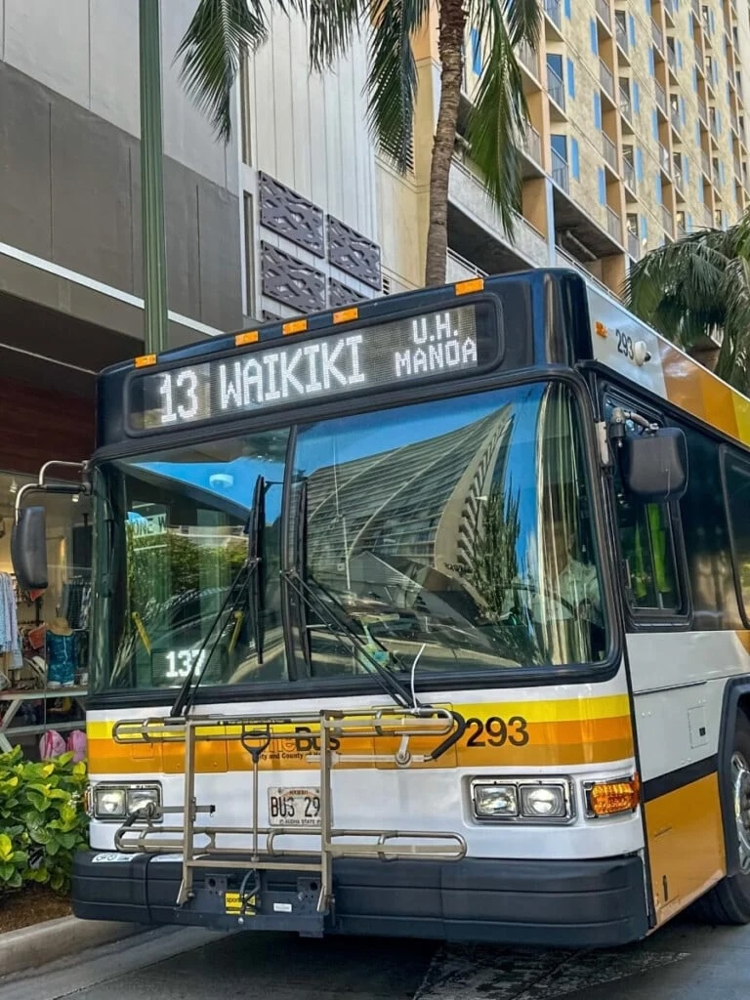
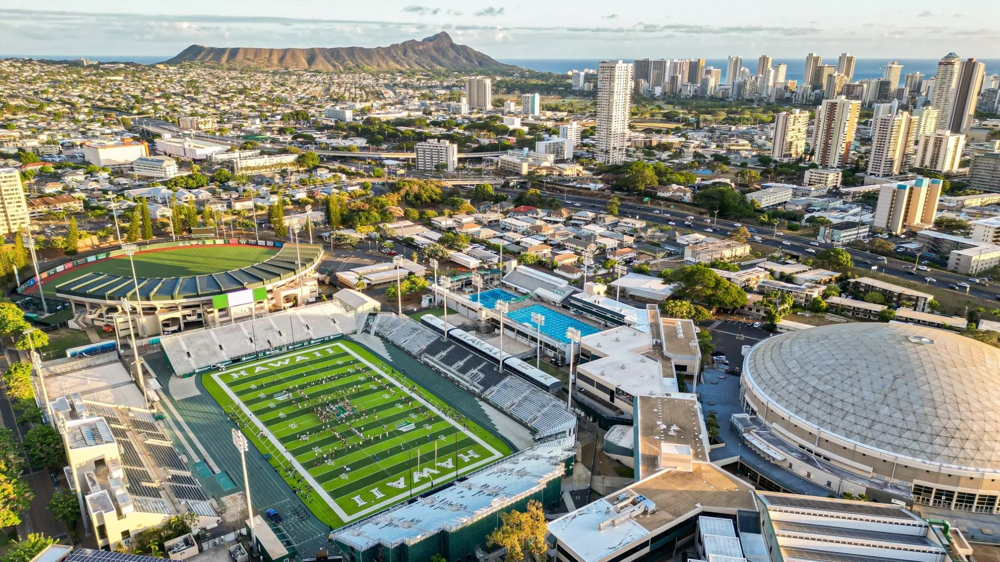

Community Overview

Live in Paradise
Wake up to modern island living in the heart of Honolulu. Located in vibrant Kaka'ako, out community offers spacious residences, stunning city and ocean views, and is just 5 minutes from Ala Moana Beach Park and 10 minutes from Waikiki, allowing you to enjoy Hawaii's beauty everyday.
 Explore the Island
Explore the Island
Adventure begins just outside your door. Spend the day relaxing at Ala Moana Beach Park, strolling along Magic Island, or exploring O'ahu's scenic coastline. With beaches only a 5 minute drive away and easy access to major highways, the island's best attractions are always within reach.

Dine Local Cuisine
Experience Honolulu's diverse culinary scene just minutes from home. From award-winning fine dining and fresh island seafood to authentic Hawaiian, Japanese, Korean, and international cuisine, you'll find exceptional restaurants throughout Kaka'ako, Downtown Honolulu, and Ala Moana - all within a 5-10 minute drive.

Shop local
Enjoy convenient access to one of the world's largest open-air shopping centers. Ala Moana Center is less than 2 miles away - about a 5 minute drive or 20 minute walk - offering hundreds of retail stores, local boutiques, restaurants, and everyday essentials.

Easy Transportation
Enjoy convenient access to Honolulu's major transportation routes from the heart of Kaka'ako. The community is just minutes from H-1 Freeway, making travel to Downtown Honolulu, Waikiki, and the rest of O'ahu quick and convenient. Residents can also take advantage of nearby bus stops, the Skyline rail system, and dedicated bike lanes for an easy, car-free commute. Whether you're heading to work, the beach, shopping, or the airport, getting around the island is simple and efficient.
Nearby Transportation
- H-1 Freeway-Approximately 3 minutes
- Downtown Honolulu-Approximately 5 minutes
- Ala Moana Center-Approximately 5 minutes
- Waikiki-Approximately 10 minutes
- Daniel K. Inouye International Airport-Approximately 15 minutes
- TheBus-Multiple routes within a short walk
- Skyline Rail-Nearby stations provide convenient connections to West side
- Protected Bike Lanes-Safe cycling routes throughout Kaka'ako and surrounding neighborhoods

Education for Every Stage
Families and lifelong learners will appreciate the variety of educational opportunities just minutes from the community. From highly regarded public and private K-12 schools to leading colleges and universities, residents have convenient access to quality education at every level. Whether you're raising a family or pursuing higher education, you'll find exceptional learning opportunities close to home.
Nearby K-12 Schools
- Royal Elementary School (~5 minutes)
- Central Middle School (~5 minutes)
- President William McKinley High School (~10 minutes)
- Punahou School (~10-15 minutes)
- 'Iolani School (~10-15 minutes)
Higher Education
- Kapi'olani Community College (~15 minutes)
- University of Hawaii at Manoa (~15 minutes)
- Honolulu Community College (~10 minutes)
- Chaminade University of Honolulu (~15 minutes)
- Hawai'i Pacific University (~5-10 minutes)